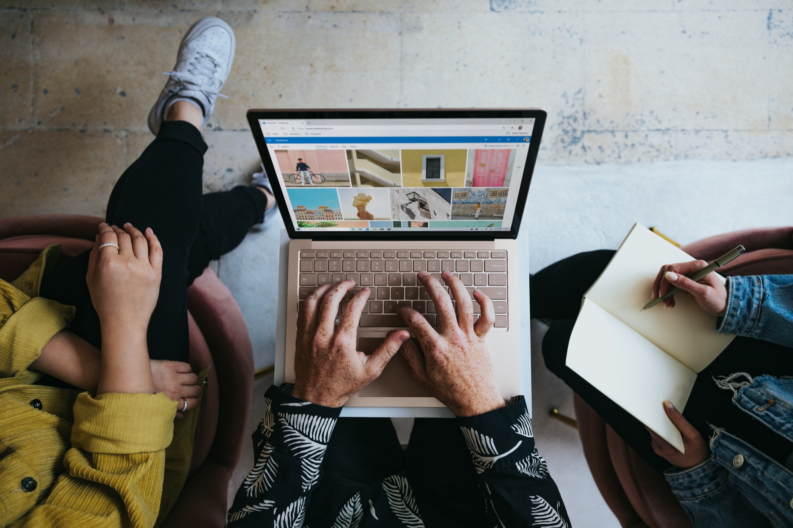

Service 01 · 블로그 세팅
전북 담결한의 블로그 세팅,
전북 담결한의 블로그 세팅,
홍보용 블로그의 첫 틀
브랜드·상품을 알리기 위해 블로그를 시작하거나 다시 정리하려는 분께, 노리는 키워드에 맞춘 블로그 기본 틀을 함께 잡습니다.

이런 분께 필요합니다
- 홍보용 블로그를 새로 시작하려는 분매장이나 상품을 알리려고 블로그를 열었지만, 첫 단추를 어떻게 끼워야 할지 모르는 분.
- 운영 중인 블로그를 다시 정리하고 싶은 분글은 쌓였는데 블로그가 무엇을 하는 곳인지 한눈에 보이지 않는 분.
- 오프라인 업체·온라인 사이트를 함께 알리고 싶은 분블로그를 매장 방문이나 사이트 방문으로 이어지는 입구로 만들고 싶은 분.
대표 고민 — “블로그는 있는데, 무엇을 어떻게 올려야 손님이 찾아올지 모르겠어요.” 블로그 세팅은 이 질문에 답하는 첫 단계입니다.
제공 내용
블로그 세팅은 블로그가 ‘무엇을, 누구에게’ 알리는 곳인지 분명하게 만드는 일입니다. 상담에서 아래 항목을 중심으로 함께 살펴보고, 실제로 진행할 항목은 블로그 상태에 맞게 정합니다.
- 블로그 방향 정리홍보할 브랜드·상품과 찾아올 손님을 기준으로 블로그의 방향을 정합니다.
- 노리는 키워드 확인손님이 실제로 검색할 키워드를 확인하고, 블로그의 기본 틀에 반영합니다.
- 블로그 기본 틀 정리처음 들어온 사람이 이 블로그가 무엇을 하는 곳인지 알 수 있도록 기본 구성을 정리합니다.
진행 과정
- 이메일 문의블로그 주소와 홍보할 브랜드·상품을 보내 주세요.
- 상담지금 블로그 상태와 노리는 키워드를 함께 확인합니다.
- 범위·일정 결정세팅할 항목과 일정을 정해 이메일로 안내드립니다.
- 세팅 진행정한 범위에 맞춰 블로그 기본 틀을 정리합니다.
- 확인과 다음 단계정리된 블로그를 함께 확인하고, 필요하면 상위노출 상담이나 마케팅 실행으로 이어갑니다.
소요 시간 · 업무 범위
블로그 세팅의 범위와 소요 시간은 상담 후 결정합니다. 새로 시작하는 블로그인지, 이미 글이 많은 블로그인지에 따라 해야 할 일이 크게 다르기 때문입니다.
- 기본 범위
- 상담에서 정한 블로그 방향과 노리는 키워드를 바탕으로 한 블로그 기본 틀 정리
- 예상 소요 시간
- 상담 후 블로그 상태를 확인한 뒤, 시작 전에 이메일로 안내
- 포함 사항
- 상담, 블로그 방향 정리, 노리는 키워드 확인, 정한 범위의 세팅
- 별도 협의 기준
- 블로그의 현재 상태(새 블로그·운영 중인 블로그), 홍보할 브랜드·상품의 수, 세팅 이후 마케팅 실행까지 이어서 맡길지 여부
준비사항 · 주의사항
처음 문의할 때 준비할 것
- 블로그 주소 (아직 없다면 그렇다고 적어 주세요)
- 홍보하고 싶은 브랜드·상품 소개
- 오프라인 매장 또는 온라인 사이트 주소
- 손님이 검색했으면 하는 키워드
알아 두실 점
- 블로그 세팅은 상위노출을 위한 바탕을 만드는 일로, 특정 검색 순위를 약속하지 않습니다.
- 검색 노출은 검색 서비스의 기준에 따라 달라질 수 있습니다.
- 범위와 일정은 상담 후 정한 내용을 기준으로 진행합니다.
블로그 세팅 자주 묻는 질문
블로그가 아직 없어도 문의할 수 있나요?
네. 블로그를 새로 시작하려는 분도 블로그 세팅의 대상입니다. 홍보하고 싶은 브랜드·상품과 노리는 키워드를 적어 이메일로 보내 주세요.
세팅만 맡기고, 글은 직접 써도 되나요?
네. 세 업무는 따로 맡길 수 있습니다. 세팅 후 직접 운영하다가 방향이 막히면 블로그 상위노출 상담을, 실행할 손이 부족하면 블로그 마케팅 실행을 살펴보세요.
블로그 세팅은 얼마나 걸리나요?
상담 후 결정합니다. 블로그 상태와 정리할 범위를 확인한 뒤, 시작 전에 예상 일정을 이메일로 안내드립니다.